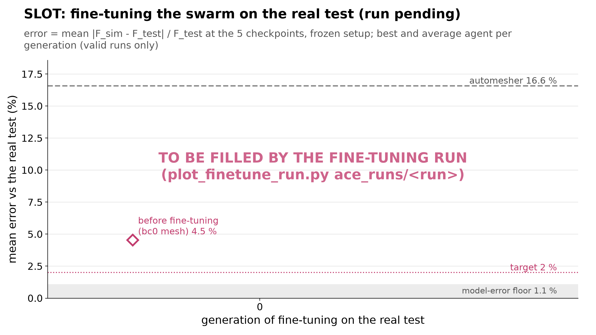

Self-improving meshing agents: talk figures
Every number recomputed from the raw runs. Click a figure for the full-size image. Rebuild: python talk_plots/make_index.py
Act 1: agentic meshing works, and training works
On the benchmark problems our agents beat the gmsh automesher by a large factor, and they get better the longer they train.
Training works: the mean agent climbs 1.3x → 4.4x the automesher (Cook)

Title numbers. 1.3x = gen-0 mean 0.318 / 0.25; 4.4x = gen-10 mean 1.095 / 0.25 (the best agent's 1.126 = 4.5x is labelled on the curve).
Caption. Best and mean base score per generation in the deep loop (deep1: 8 Sonnet agents split 4 per task, Opus teacher, self-reflection, organizer). The grey dashed line is the gmsh automesher's own score, 0.25. Each generation is one training step.
Key numbers (all in act1_numbers.json)
- Cook's membrane: the mean agent goes 0.318 -> 1.095 (gen 0 -> gen 10), and the best agent goes 0.347 -> 1.126. 1.126 / 0.25 = 4.50x the automesher's score.
- Cook's accuracy gain g = e_auto / e: the gen-0 mean is 1.10; the gen-10 mean is 4.68, at a mean 2.14x the automesher's DOFs.
- Cook's best run, g10-cooks_membrane-a7: error 1.07% vs the automesher's 5.11%, so g = 4.76 at 710 / 336 = 2.11x its DOFs.
- LE11 axisymmetric: the best agent goes 0.001 -> 0.880 and the mean goes 0.001 -> 0.845. The best is 3.52x the automesher.
- On Cook the best agent dips twice (gen 2->3: 0.983 -> 0.937; gen 4->5: 0.970 -> 0.949) and otherwise rises. The mean rises in 8 of 10 steps on Cook (two small dips: gen 3->4 by 0.001, gen 4->5 by 0.020).
- Cost of the whole run: $46.37. The teacher took $30.90 of it (
ace_runs/deep1/summary.md).
Sources. ace_runs/deep1/gen*/runs/*.json -> checks.base_score, gain, rel_error, dofs, auto_error, auto_dofs (44 runs per task, none invalid).
Caveats
- The LE11 axisymmetric jump from gen 0 to gen 1 is a setup fix, not meshing. All 4 gen-0 agents wrote the temperature field as sqrt(x^2+y^2)+y instead of x+y (r+z). That gave about 30% error whatever the mesh (
gen0/teacher_nafems_le11_axisym.json). The mesh-only learning on that task is the gen 1 -> 10 rise: best agent 0.706 -> 0.880, mean 0.678 -> 0.845. - Cook is mesh-only learning: the gen-0 setups were already valid (g ≈ 1).
- 4 agents per task per generation, and one run (no seeds or repeats).
- deep1 was stopped by hand (STOP file) after generation 10.
- "Base score" leaves out the be-the-best bonus.
The deep loop learns steadily; the basic loop plateaus or drifts

Caption. Every run scored on field error against the automesher (field mode), on every problem. Solid lines with dots are the best agent per generation. Dashed lines are the mean agent. Use this as a backup or honesty slide next to fig1.
Key numbers (gen 0 -> last generation; mean / best)
- Cook, deep1 (Opus teacher, 4 agents per task): 0.318 / 0.347 -> 1.095 / 1.126 by gen 10.
- Cook, cook_auto (basic loop, 6 agents): 0.449 / 0.449 -> 0.700 / 0.710 by gen 19. Its best ever is 0.771, at gen 11.
- Cook, split1 (basic loop, 3 agents per task): 0.392 / 0.453 -> 0.711 / 0.735 by gen 19. Its best ever is 0.801, at gen 2.
- LE1, split1: 0.782 / 0.888 -> 0.487 / 0.767 by gen 19. The best ever was 1.062, at gen 5. There is no upward trend; the last generation is worse than gen 0.
- LE11 axisymmetric, le11 (basic): 0.253 / 0.294 -> 0.091 / 0.272. The temperature-field setup bug keeps coming back (33 of its 57 runs have error > 20%).
- LE11 3D, le11 (basic): 0.307 / 0.342 -> 0.302 / 0.303. Flat; the best ever is 0.394.
- Cost: deep1 $46.37; cook_auto $2.09; split1 $3.98; le11 $5.21.
Sources. ace_runs/{deep1,cook_auto,split1,le11}/gen*/runs/*.json (checks). split1's score includes the bonus, so its base score = score - best_bonus (verified against the formula for all 120 runs).
Caveats
- The basic loops use a single-call Sonnet diagnoser, not the Opus teacher.
- The deep loop costs about 10-20x more per run.
- The runs differ in agents per task and in problems, so this is not a controlled ablation.
- The basic-loop runs got stuck on one recipe on Cook (base score near 0.71 for about 10 generations).
2D: the best agents beat the automesher's whole cost curve; 3D: a tie

Caption. Scored error against DOFs (log-log) for every valid agent run in the 4 field-mode runs. Open circles are generation 0. The grey line is the automesher refined uniformly (gmsh default sizes x MeshSizeFactor), and the X is the automesher itself. The star is the best-scoring run.
Key numbers (best-scoring run against the uniformly refined automesher, log-log interpolated)
| problem | best run | error / DOFs | automesher error at the same DOFs | lower error | automesher DOFs for the same error | fewer DOFs |
|---|---|---|---|---|---|---|
| Cook | deep1 g10-cooks_membrane-a7 | 1.07% / 710 | 3.69% | 3.4x | 7,690 | 10.8x |
| LE1 | split1 g5-nafems_le1-a2 | 0.81% / 782 | 1.87% | 2.3x | 2,122 | 2.7x |
| LE11 axisym. | deep1 g10-nafems_le11_axisym-a4 | 0.71% / 648 | 1.68% | 2.4x | 3,267 | 5.0x |
| LE11 3D | le11 g6-nafems_le11_3d-a4 | 2.63% / 8,739 | 2.80% | 1.06x | 9,670 | 1.11x |
Sources
act1_runs.csv(fromace_runs//gen/runs/*.json).automesher_sweep.json(made byautomesher_sweep.py). Its factor-1 point reproducesace/field_refs/<problem>_auto.jsonexactly on all 4 problems (same DOFs, same error to 1e-9).
Caveats
- "The best agents beat the whole curve" is about the best runs: on LE1 many agent runs sit on or above the uniform curve; on Cook almost all runs after gen 0 sit below it.
- The uniform sweep is new computation made for this talk: gmsh plus the fixed skfem solver plus the same error function the runs were scored with. No agent or API was involved.
- "Error" = max(energy-norm field error, RMS von Mises error at 12 probe points), the scored error.
- The 37 LE11-axisymmetric runs near 30% error (4 in deep1 gen 0, 33 in le11), and the 2 LE11-3D runs at 124%, are wrong setups (temperature field; fixed instead of sliding supports), not meshes. They are drawn so nothing is hidden.
- In LE11 3D the agents mostly refine uniformly: no gain over the refined automesher.
The best agent scores 1.6-4.5x the automesher on every benchmark

Caption. Base score of the automesher (0.25 by construction), the gen-0 mean agent, the last-generation mean agent and the best agent ever, per problem. Each problem uses the run that holds its best agent.
Key numbers (base score; the ratio is against the automesher's 0.25)
- Cook (deep1): 0.25 / 0.318 / 1.095 / 1.126 = 4.50x.
- LE1 (split1): 0.25 / 0.782 / 0.487 / 1.062 = 4.25x. The best is at gen 5, and the last generation is lower than gen 0.
- LE11 axisymmetric (deep1): 0.25 / 0.001 / 0.845 / 0.880 = 3.52x. Gen 0 is the setup bug.
- LE11 3D (le11): 0.25 / 0.307 / 0.302 / 0.394 = 1.57x. There is no training gain.
What the score means (ace/config.py)
- score = A / c, where c = DOFs / automesher DOFs.
- A = (g/2)^2 for g < 2, and A = g/2 above that.
- 1.0 = 2x the automesher's accuracy at its DOFs.
- Above the 2x target, a score ratio of k means "k x the accuracy per DOF". Cook's 4.5x is g = 4.76 at c = 2.11.
Sources. act1_numbers.json -> numbers.problems.*.per_run, best_run.
Caveats
- The best of all runs over all generations is a maximum over 44-60 runs per problem, so it is a selected value.
- For deep1 Cook the last-generation mean (1.095, 4.38x) is almost the same as the best, so selection is not what drives it.
- On LE1 and LE11 3D the best is an early, isolated peak.
- Identical meshes recur: LE1's best mesh also appears at g6-a0, and LE11-3D's at g7-a0 and g11-a0.
Matching the best agent costs the automesher up to 11x the DOFs

Caption. For each problem's best-scoring agent run, two factors against gmsh's default mesh refined uniformly:
- how much lower the agent's error is at the same DOFs (light bars);
- how many times more DOFs the automesher needs to reach the agent's error (dark bars).
Key numbers. Cook 3.4x / 10.8x; LE1 2.3x / 2.7x; LE11 axisymmetric 2.4x / 5.0x; LE11 3D 1.06x / 1.11x. All are interpolated inside the sweep; nothing is extrapolated.
Sources. automesher_sweep.json, act1_numbers.json (error_reduction_at_equal_dofs, dof_saving_at_equal_error).
Caveats
- The comparison mesher is gmsh's default refined uniformly. A human expert, or gmsh with curvature/size fields, would do better than this baseline.
- One best run per problem, interpolated linearly in log-log between sweep points.
- This is the fairest form of "Nx better than the automesher": the score's own reference, the unrefined automesher at 336 DOFs, flatters the agents' meshes, which use 2x the DOFs.
Same part, same solver: the trained agent grades the mesh into the corners

Caption. Cook's membrane in deep1. Left: a generation-0 agent's mesh, which is automesher-level. Right: the best generation-10 mesh, refined into the re-entrant top-left corner and the loaded top-right corner.
Key numbers
- Left, g0-cooks_membrane-a1: 282 DOFs, error 5.09%, g = 1.00, base score 0.300.
- Right, g10-cooks_membrane-a7: 710 DOFs, error 1.07%, g = 4.76, base score 1.126.
- Automesher: 336 DOFs, error 5.11%.
Sources. ace_runs/deep1/gen0/reports/g0-cooks_membrane-a1_mesh.png and ace_runs/deep1/gen10/reports/g10-cooks_membrane-a7_mesh.png, cropped to the mesh. The numbers come from the matching gen*/runs/*.json.
Caveats
- Nothing was re-meshed. The left mesh is an agent's, not the automesher's own, but its accuracy matches the automesher's (1.00x).
- The report error maps (
*_error.png) are not shown, because their colour scales differ between the two runs.
Act 2: swarms train better, and this scales
On the hard 3D CAD parts, more agents trained together reach better meshes: 8 > 4 > 2 in every comparison, and 8 agents beat one budget-matched agent.
on 65_bc0, 8 agents improve almost every generation; 2 agents stall

Caption. Best agent's base score in each generation for swarms of 2, 4 and 8 Sonnet agents (afternoon runs, diversity mechanisms on). On abc_00000065_bc0 the 8-agent swarm starts highest and climbs to about 3x the automesher; on abc_00000003_bc7 no team beats the automesher.
Key numbers (afternoon, best per generation, gens 0 -> 7).
- abc_00000065_bc0: 8 agents 0.651 -> 0.745 (max 0.753; steps up/down/flat 6/1/0, largest drop -0.017); 4 agents 0.575 -> 0.742 (up/down/flat 5/1/1, largest drop -0.016); 2 agents 0.548 -> 0.590 (up/down/flat 5/2/0, largest drop -0.141, low point 0.331 in gen 4).
- abc_00000003_bc7: 8 agents 0.230 -> 0.233 (max 0.237), 4 agents 0.205 -> 0.205, 2 agents 0.175 -> 0.206. Highest bc7 base score in any of the nine runs: 0.237 (< 0.25).
- Step counts use a flat band of +-0.005.
Data. ace_runs/div_s{1,2,4,8}/gen*/runs/g*-{task}-*.json (checks.base_score, recomputed from rel_error, auto_error, dofs, auto_dofs). Plotted values: data.json -> runs.<run>.tasks.<task>.
Caveats.
- One run per configuration; the afternoon README estimates run-to-run noise at 0.03-0.1 per generation.
- Team size n splits 50/50 over the two tasks, so the per-task best is the max of n/2 runs (1, 2, 4 for n = 2, 4, 8). Best-of-n includes more draws; the framing used here is that the swarm is trained and deployed together, so its best mesh is the one used.
- abc_00000003_bc7: every team stays below the automesher (best 0.237); the differences between team sizes' mean-of-best (gens 1-7) are about 0.02-0.04 and the 8 > 4 > 2 order is already there in gen 0, before any learning.
- "Almost every generation" means 6 of 7 steps up on abc_00000065_bc0 for 8 agents; the 4-agent swarm has nearly as many up-steps (5 vs 6) and a larger net gain (0.166 vs 0.094), but it sits around 0.56-0.64 for gens 0-5 and only catches up in gens 6-7.
on 65_bc0, 8 agents improve almost every generation; 2 agents stall

Caption. Best agent's base score in each generation for swarms of 2, 4 and 8 Sonnet agents (afternoon runs, diversity mechanisms on); morning runs dashed and faded. On abc_00000065_bc0 the 8-agent swarm starts highest and climbs to about 3x the automesher; on abc_00000003_bc7 no team beats the automesher.
Key numbers (afternoon, best per generation, gens 0 -> 7).
- abc_00000065_bc0: 8 agents 0.651 -> 0.745 (max 0.753; steps up/down/flat 6/1/0, largest drop -0.017); 4 agents 0.575 -> 0.742 (up/down/flat 5/1/1, largest drop -0.016); 2 agents 0.548 -> 0.590 (up/down/flat 5/2/0, largest drop -0.141, low point 0.331 in gen 4).
- abc_00000003_bc7: 8 agents 0.230 -> 0.233 (max 0.237), 4 agents 0.205 -> 0.205, 2 agents 0.175 -> 0.206. Highest bc7 base score in any of the nine runs: 0.237 (< 0.25).
- Step counts use a flat band of +-0.005.
Data. ace_runs/div_s{1,2,4,8}/gen*/runs/g*-{task}-.json (checks.base_score, recomputed from rel_error, auto_error, dofs, auto_dofs); ace_runs/scale_s{1,1_opus,2,4,8}/gen/runs/g*-{task}-*.json (same fields). Plotted values: data.json -> runs.<run>.tasks.<task>.
Caveats.
- One run per configuration; the afternoon README estimates run-to-run noise at 0.03-0.1 per generation.
- Team size n splits 50/50 over the two tasks, so the per-task best is the max of n/2 runs (1, 2, 4 for n = 2, 4, 8). Best-of-n includes more draws; the framing used here is that the swarm is trained and deployed together, so its best mesh is the one used.
- abc_00000003_bc7: every team stays below the automesher (best 0.237); the differences between team sizes' mean-of-best (gens 1-7) are about 0.02-0.04 and the 8 > 4 > 2 order is already there in gen 0, before any learning.
- "Almost every generation" means 6 of 7 steps up on abc_00000065_bc0 for 8 agents; the 4-agent swarm has nearly as many up-steps (5 vs 6) and a larger net gain (0.166 vs 0.094), but it sits around 0.56-0.64 for gens 0-5 and only catches up in gens 6-7.
8 > 4 > 2 in all four comparisons

Caption. For each study and task, the best agent's base score averaged over the generations after gen 0. The ordering 8 > 4 > 2 agents holds in 4 of 4 cases.
Key numbers.
| study | task | 2 agents | 4 agents | 8 agents | 8 > 4 > 2 |
|---|---|---|---|---|---|
| div | abc_00000065_bc0 | 0.505 | 0.641 | 0.731 | yes |
| div | abc_00000003_bc7 | 0.194 | 0.213 | 0.230 | yes |
| scale | abc_00000065_bc0 | 0.642 | 0.650 | 0.668 | yes |
| scale | abc_00000003_bc7 | 0.198 | 0.218 | 0.231 | yes |
Windows: afternoon gens 1-7 (all runs have gens 0-7); morning gens 1-4, the window all three morning swarms completed. With each morning run's own window (2 agents gens 1-5, 4 and 8 agents gens 1-4, as in results/scaling_gold_2026-10-31/README.md) the morning values are: 2 agents 0.199 / 0.631, 4 agents 0.218 / 0.650, 8 agents 0.231 / 0.668 (bc7 / 65_bc0); the order is the same.
Data. ace_runs/div_s{1,2,4,8}/gen*/runs/g*-{task}-.json (checks.base_score, recomputed from rel_error, auto_error, dofs, auto_dofs); ace_runs/scale_s{1,1_opus,2,4,8}/gen/runs/g*-{task}-*.json (same fields). Plotted values: data.json -> fig2.
Caveats.
- One run per configuration; the afternoon README estimates run-to-run noise at 0.03-0.1 per generation.
- Team size n splits 50/50 over the two tasks, so the per-task best is the max of n/2 runs (1, 2, 4 for n = 2, 4, 8). Best-of-n includes more draws; the framing used here is that the swarm is trained and deployed together, so its best mesh is the one used.
- Morning 65_bc0 gaps are small (2 / 4 / 8: 0.642 / 0.650 / 0.668), well inside the 0.03-0.1 per-generation noise; and the single highest morning 65_bc0 score was the 2-agent run's 0.717 (gen 4). The morning bc7 order is consistent, the morning 65_bc0 order is weak.
- On bc7 the bars are all below the automesher's 0.25.
the average agent learns too

Caption. The mean base score over all agents working on the task in each generation. With 8 agents (4 per task) the average agent on abc_00000065_bc0 rises from 0.550 to 0.733, so the swarm's gain is not only a best-of-more-draws effect.
Key numbers (abc_00000065_bc0, mean agent per generation, gens 0-7).
- 8 agents: 0.550, 0.611, 0.633, 0.680, 0.723, 0.729, 0.683, 0.733
- 4 agents: 0.550, 0.544, 0.596, 0.613, 0.607, 0.619, 0.678, 0.727
- 2 agents (one run per task, so mean = best): 0.548, 0.560, 0.600, 0.472, 0.331, 0.481, 0.501, 0.590
- mean over gens 1-7: 8 agents 0.685, 4 agents 0.626, 2 agents 0.505.
- abc_00000003_bc7, gen 0 -> gen 7: 8 agents 0.221 -> 0.229, 4 agents 0.203 -> 0.204, 2 agents 0.175 -> 0.206 (range of the 8-agent mean: 0.206-0.234).
Data. ace_runs/div_s{1,2,4,8}/gen*/runs/g*-{task}-*.json (checks.base_score, recomputed from rel_error, auto_error, dofs, auto_dofs). Plotted values: data.json -> runs.<run>.tasks.<task>[].mean.
Caveats.
- The 4-agent swarm's mean agent ends at the same level (0.727 vs 0.733 in gen 7); 8 agents get there sooner (8-agent mean >= 0.68 from gen 3, the 4-agent mean first above 0.65 in gen 6). The 8-agent mean dips in gen 6 (0.683).
- On bc7 the mean agent barely moves for any team size.
- With roles on, part of each team is told to explore (lowest-ranked third) or to vary one factor, which pulls the mean down by design; the mean is a conservative measure.
- One run per configuration.
8 agents beat one budget-matched agent on 65_bc0 and tie on bc7

Caption. The afternoon 8-agent swarm (solid pink) against a single Sonnet agent that gets the whole swarm's solve and turn budget and its wall-clock time per generation (solid blue). Shorter morning runs dashed: the 8-agent swarm, the single Sonnet agent and a single Opus agent. API cost in the legend.
Key numbers.
- Mean of per-generation best, gens 1-7 (afternoon): abc_00000065_bc0 8 agents 0.731 vs single 0.592; abc_00000003_bc7 8 agents 0.230 vs single 0.218.
- abc_00000065_bc0 max: 8 agents 0.753, single 0.686.
- abc_00000003_bc7 from gen 3 on: single 0.229-0.233, 8 agents 0.224-0.237: the single agent matches the swarm there.
- Morning, gens 1-2 (all morning runs have them): 65_bc0 8 agents 0.633 vs single Sonnet 0.652; bc7 0.229 vs 0.181. Single Opus per gen (bc7 / 65_bc0): gen 0: 0.203 / 0.598; gen 1: invalid / 0.641; gen 2: 0.196 / 0.539.
- API cost: 8 agents afternoon $41.45, single afternoon $13.94; morning 8 agents $27.41, single Sonnet $3.72, single Opus $3.60.
Data. ace_runs/div_s8, ace_runs/div_s1, ace_runs/scale_s8, ace_runs/scale_s1, ace_runs/scale_s1_opus (gen*/runs/*.json checks; cost.jsonl). Budget matching: ace_runs/run_div_s1.sh, ace/single_loop.py (per task MAX_SOLVES x swarm agents per task = 16 solves, MAX_TURNS x 8 turns per generation, time-matched to div_s8).
Caveats.
- "Budget-matched" means solves, turns and wall-clock time, not dollars: the single agent cost about 1/3 of the swarm ($13.94 vs $41.45); the swarm's cost is dominated by the Opus teacher (see fig 6).
- The single agent is not stronger per call: div_s1 and scale_s1 use Sonnet like the swarm agents (high effort); only scale_s1_opus uses Opus, and it ran 3 generations, with an invalid bc7 mesh in gen 1.
- div_s1 gen 7 resubmitted exactly the gen-6 meshes on both tasks (same DOFs and error).
- On bc7 the single agent catches up with the swarm from gen 3; the swarm's advantage is clear only on 65_bc0.
- The morning runs point the other way on 65_bc0: over gens 1-2 the single Sonnet agent (0.652) is above the morning 8-agent swarm (0.633), while the swarm leads on bc7 (0.229 vs 0.181). Only 2 learning generations, so this is weak evidence either way, but the afternoon result is not replicated by the morning pair.
- One run per configuration; the morning runs are short (3 generations for the single agents).
cost grows sub-linearly with team size

Caption. API dollars spent per generation by each afternoon run. Going from 2 to 8 agents multiplies the mean cost per generation (gens 0-6) by 3.31, not 4 (2 -> 4 agents: 1.71x; 4 -> 8: 1.94x). Both the agents' spend and the Opus teacher's spend grow less than linearly (table).
Key numbers (afternoon runs; mean $/gen over gens 0-6, gen 7 excluded because the run ends before its teacher step).
| agents | total $ | mean $/gen (0-6) | agents (generator) $ | teacher (Opus) $ | reflect $ | organizer $ |
|---|---|---|---|---|---|---|
| 1 | $13.94 | $1.91 | $3.96 | $8.33 | $0.56 | $1.09 |
| 2 | $12.76 | $1.71 | $3.47 | $7.49 | $0.54 | $1.26 |
| 4 | $21.34 | $2.92 | $6.05 | $12.21 | $1.10 | $1.98 |
| 8 | $41.45 | $5.67 | $12.51 | $23.09 | $2.23 | $3.61 |
Morning totals: 1 agent $3.72, 2 agents $8.69, 4 agents $15.52, 8 agents $27.41; single Opus $3.60. Afternoon total $89.49.
Data. ace_runs/div_s{1,2,4,8}/cost.jsonl (usd per call). A generator call carries its generation in run_id; reflection, teacher and organizer calls (empty run_id) are assigned to the latest generation started. This attribution reproduces ace_runs/div_s1/generations.jsonl and the cumulative $ in ace_runs/div_s8/summary.md exactly.
Caveats.
- The 1-agent row is the single agent (div_s1, one conversation for both tasks); it costs slightly more per generation than the 2-agent swarm.
- "Sub-linear" is from one run per size and 7 generations; it is not a cost model.
- The 8-agent swarm's teacher spend ($23.09) is larger than its agents' spend ($12.51).
Act 3: the harness learns from real lab data
A 3D-printed part crushed on an Instron: the raw nonlinear simulation misses reality; learning from the test fixes the setup, and the swarm fine-tunes its mesh against the real curve.
Real test: seating, linear climb, yielding to 4.8 kN, then cracking

Caption. The 3D-printed abc_00000065 C-bracket (Formlabs Alpha Fast) crushed between Instron platens: a soft seating toe, a straight climb, softening as the resin yields, a peak, then saw-tooth load drops (cracking) to the break. The shaded loading branch is what the simulation is scored against.
Key numbers (all computed in make_figures.py from the test CSV):
- peak 4755 N at 2.513 mm crosshead travel in this digitization (the test notes say 4.80 kN at 2.56 mm; see caveats)
- toe slope 1.66 kN/mm (fit over 0.10-0.45 mm); linear slope 2.70 kN/mm (fit over 1050-1800 N)
- force at the 5 scoring checkpoints 0.5 / 1.0 / 1.5 / 2.0 / 2.5 mm: 860 / 2164 / 3308 / 4171 / 4743 N
- last point (break) at 8.68 mm; 2581 digitized points
Data. physical_tests/abc_00000065_compression/cload_compression.csv (the frozen scoring's test file); test notes physical_tests/abc_00000065_compression/cload_compression.json.
Caveats.
- The curve is digitized from the plot in the machine's PDF report (about +-0.01 mm, +-15 N), not raw data.
- A second digitization (/private/tmp/claude-501/-Users-aryan-Documents-Aryan-CS-scienceclawhack/29d391ed-69f3-4559-b365-a260e486ee85/scratchpad/wf/cload_compression_curve.csv) puts the peak at 4798 N at 2.556 mm, about 1 % higher than this file near the peak. The scoring uses this file, so the figure does too.
- Displacement is crosshead travel (no extensometer): it includes seating and the load train's deflection.
- "Seating, one prong first?" for the toe is an interpretation from the test notes, not a measurement.
The raw solver misses reality: frictionless platens give out at 3.0 kN

Caption. The out-of-the-box nonlinear simulation (CalculiX J2 plasticity + NLGEOM, frictionless platens) plateaus at about 3 kN while the real part reaches 4.7 kN at 2.5 mm. Sticking platens (friction stops the prongs splaying) reach the right strength; tilted or one-sided loading does not help.
Key numbers (force at 2.5 mm travel; mean |error| at the 5 checkpoints, no seating or compliance mapping):
| variant (4 mm P2 mesh) | F at 2.5 mm | mean error |
|---|---|---|
| measured | 4743 N | - |
| frictionless platens (baseline) | 3.0 kN (3009 N at 2.56 mm) | 33.2 % |
| sticking platens | 5.1 kN (5184 N at 2.56 mm) | 35.6 % |
| frictionless, elastic (no plasticity) | 5.1 kN | 30.4 % |
| frictionless, prong f17 at half travel | 2.8 kN | 29.1 % |
| frictionless, prong f34 at half travel | 2.8 kN | 29.5 % |
| frictionless, only prong f17 pushed | 1.5 kN | 50.3 % |
Data. /private/tmp/claude-501/-Users-aryan-Documents-Aryan-CS-scienceclawhack/29d391ed-69f3-4559-b365-a260e486ee85/scratchpad/nl_bc/<variant>/curve.csv (u_mm = platen travel, F_N), set up by /private/tmp/claude-501/-Users-aryan-Documents-Aryan-CS-scienceclawhack/29d391ed-69f3-4559-b365-a260e486ee85/scratchpad/nl_bc.py; test: physical_tests/abc_00000065_compression/cload_compression.csv. Numbers in act3_data.json / act3_errors.csv.
Caveats.
- Raw: platen travel is read as crosshead travel. That is why the sticking curve scores WORSE (35.6 %) than frictionless (33.2 %) on the mean error: without the seating gap it is far too high early (99 % off at 0.5 mm) even though it matches the strength at 2.5 mm (8 % off). Do not quote "sticking fixes it" from this slide alone: the fix needs sticking AND seating (fig3).
- The elastic frictionless run also reaches 5.1 kN: the collapse of the frictionless model needs plasticity plus splay. Elastic is not a candidate (the dogbone shows the resin yields from about 12 MPa).
- The two tilt variants (f17 or f34 at half travel) differ by at most 1.6 % and share one label.
- All on one uniform 4 mm P2 mesh (the bonded run equals the h4 mesh run of the mesh sweep exactly).
Learning the setup: error 33 % → 2.0 %; a fine mesh: 1.1 %

Caption. Each physical ingredient found by analysing the experiment lowers the mismatch with the real test: a seating gap, sticking platens, the load train's compliance, then a fine mesh.
Key numbers (mean |F_sim - F_test| / F_test at 0.5/1.0/1.5/2.0/2.5 mm):
| step | mesh | mean error |
|---|---|---|
| frictionless platens, raw | 4 mm | 33.2 % |
| + seating gap (delta 0.2585 mm, no compliance) | 4 mm | 20.2 % |
| + sticking platens | 4 mm | 5.0 % |
| + load-train compliance (frozen spec: delta 0.2335 mm, c 2.898e-5 mm/N) | 4 mm | 2.0 % |
| + fine mesh (uniform 2 mm, 41186 nodes) | 2 mm | 1.1 % (1.07 %) |
On the 2 mm mesh: sticking raw 33.5 %, + seating 3.4 %, + compliance 1.07 %.
Data. /private/tmp/claude-501/-Users-aryan-Documents-Aryan-CS-scienceclawhack/29d391ed-69f3-4559-b365-a260e486ee85/scratchpad/nl_bc/baseline/curve.csv, /private/tmp/claude-501/-Users-aryan-Documents-Aryan-CS-scienceclawhack/29d391ed-69f3-4559-b365-a260e486ee85/scratchpad/nl_mesh/h4/curve.csv, /private/tmp/claude-501/-Users-aryan-Documents-Aryan-CS-scienceclawhack/29d391ed-69f3-4559-b365-a260e486ee85/scratchpad/nl_mesh/h20/curve.csv; frozen delta and compliance from physical_tests/abc_00000065_compression/nonlinear_spec.json; test CSV as fig1.
Caveats.
- The setup steps alone (same 4 mm mesh) take the error 33.2 % -> 2.0 %; the last bar (1.1 %) is a finer mesh, not more setup.
- The ORDER matters. Adding sticking before seating makes the error go UP (33.2 % -> 35.6 %, the sticking curve is far too stiff at 0.5 mm without the seating gap). The bar order shown (seating first) is the one with a monotone ladder; say so if asked.
- Seating-only delta (0.2585 mm) is fitted on the 2 mm sticking curve (c = 0) and reused for the frictionless bar. With its own best delta (0.237 mm) the frictionless + seating bar would be 18.1 % instead of 20.2 %.
- The mapping cannot rescue frictionless platens: fitting delta and c freely on the frictionless curve gives at best 16.6 %, and only with a negative (unphysical) compliance (-5.1e-5 mm/N).
- delta and c were fitted on the 2 mm mesh against this same test (a calibration, not a blind prediction); my refit gives delta 0.2333 mm, c 2.911e-5 mm/N, 1.06 %, matching the spec's 0.2335 / 2.898e-5 / 1.07 %.
- The 1.1 % floor is dominated by the 1.0 mm checkpoint (3.8 % off on the finest mesh; the others are <= 1.1 %): the crude seating model (a straight line from 0 to the first point) does not capture the toe-to-linear kink.
With the learned setup, the automesher is 17 % off the real test

Caption. With the setup frozen, the mesh decides the error against the real test: gmsh's default mesh is 16.6 % off; uniform refinement levels off at 1.1 % on the finest mesh, roughly the model-error floor (labelled as such in the figure). The swarm's best mesh from the gold training (bc0, a different load case) is already at 4.5 % with 6.4k nodes. The dashed box is the fine-tuning target, to be filled by the fine-tuning run.
Key numbers (frozen spec, mean error at the 5 checkpoints):
| mesh | nodes | error vs test | per checkpoint (%) |
|---|---|---|---|
| gmsh default (automesher) | 2937 | 16.6 % (16.58) | 14.3 / 19.4 / 16.0 / 15.8 / 17.5 |
| swarm's best bc0 mesh (div_s8 g7 a2) | 6430 | 4.5 % (4.55) | 3.2 / 7.4 / 4.0 / 3.5 / 4.7 |
| uniform 4 mm | 9506 | 2.0 % (1.97) | 1.2 / 5.1 / 1.5 / 0.6 / 1.4 |
| uniform 2.5 mm | 24194 | 1.2 % (1.17) | 0.3 / 4.2 / 0.5 / 0.4 / 0.3 |
| uniform 2 mm | 41186 | 1.1 % (1.07) | 0.0 / 3.8 / 0.0 / 1.1 / 0.4 |
Accuracy gain over the automesher: swarm bc0 mesh 16.58 / 4.55 = 3.6x at 2.2x the nodes; uniform 4 mm 8.4x at 3.2x the nodes.
Data. /private/tmp/claude-501/-Users-aryan-Documents-Aryan-CS-scienceclawhack/29d391ed-69f3-4559-b365-a260e486ee85/scratchpad/nl_mesh/<auto|swarm|h4|h25|h20>/curve.csv and /private/tmp/claude-501/-Users-aryan-Documents-Aryan-CS-scienceclawhack/29d391ed-69f3-4559-b365-a260e486ee85/scratchpad/nl_mesh/nodes.txt; delta, c, checkpoints from physical_tests/abc_00000065_compression/nonlinear_spec.json. Cross-check: the committed results/real_data_finetune/baselines/baselines.json (re-solved to u_part 2.4 mm, the spec's ramp) gave 16.60 / 4.57 / 1.99 / 1.20 / 1.08 % when checked (that file is being rewritten by another workflow; its h20 value moved from 1.076 % to 1.0755 % during this check), within 0.03 points of mine.
Caveats.
- The target box (<= 2 % at <= 8k nodes) is a goal, not a result. Nothing in it is measured yet.
- The swarm's bc0 mesh was trained for a one-sided load on face f7 (bc0), not for this symmetric crush; it is a transfer result, not a fine-tuned one.
- The "floor" is the finest mesh's error (1.07 %); a still finer mesh could move it slightly. Below it, error differences are model error, not mesh error.
- The task brief quoted auto 16.8 %, swarm 4.8 %, h4 2.2 %, h25 1.4 %, h20 1.1 %. I could not reproduce those: the frozen spec gives 16.6 / 4.5 / 2.0 / 1.2 / 1.1 %, and the alternative definition (checkpoint 2.556 mm, the other digitization, delta 0.233, c 0.29e-4) gives 16.6 / 4.5 / 1.9 / 1.1 / 1.1 %. The figure uses the frozen spec.
- The teacher brief says every mesh sits above the test at every checkpoint; the 2 mm mesh is 1.1 % BELOW it at 2.0 mm.
The automesher's mesh is too stiff: 14-19 % above the real test

Caption. Same solver, same learned setup, only the mesh differs: the gmsh default mesh over-predicts the force at every checkpoint, the swarm's bc0 mesh is close, a 41k-node uniform mesh sits on the test. Closing the gap at few nodes is what fine-tuning on the real test must do.
Key numbers (force at 0.5 / 1.0 / 1.5 / 2.0 / 2.5 mm):
- measured: 860 / 2164 / 3308 / 4171 / 4743 N
- gmsh default (2937 nodes): 983 / 2584 / 3837 / 4828 / 5572 N, i.e. +14 to +19 %, mean 16.6 %
- swarm bc0 mesh (6430 nodes): 887 / 2325 / 3439 / 4315 / 4966 N, mean 4.5 %
- uniform 2 mm (41186 nodes): 859 / 2246 / 3309 / 4126 / 4723 N, mean 1.1 %
Data. /private/tmp/claude-501/-Users-aryan-Documents-Aryan-CS-scienceclawhack/29d391ed-69f3-4559-b365-a260e486ee85/scratchpad/nl_mesh/<auto|swarm|h20>/curve.csv mapped with the frozen delta 0.2335 mm and c 2.898e-5 mm/N (physical_tests/abc_00000065_compression/nonlinear_spec.json); test CSV as fig1.
Caveats.
- The simulated curves start with a straight segment from (0, 0) to the first increment: that is the seating gap of the mapping (u_cross = u_part + delta + c F), not physics; the real toe is curved.
- Simulated curves are cut at 2.75 mm for display; the scored range ends at 2.5 mm.
Platen friction carries the strength: without it the prongs splay

Caption. The teammates' CalculiX renders on a 41k-node mesh: with frictionless platens the prongs splay and yield at the nut pockets, and the force tops out at 2.92 kN; with sticking platens the part keeps carrying load (4.79 kN at 2.2 mm platen travel, 4.90 kN at the test's peak travel).
Key numbers (physical_tests/abc_00000065_compression/ccx_ramp/summary.json, "team" material = the dogbone fit, E 1879.8 MPa): team_slide F_max 2919 N; team_stick F at the test's peak travel 4903 N, F_max 5352 N at 3.0 mm. Plastic strain is already present at the first increment (0.1 mm travel, 0.33 kN slide / 0.36 kN stick), at the hex nut pocket corners (faces f8 with f38/f39 or f41/f42).
Data. physical_tests/abc_00000065_compression/ccx_ramp/render_team_slide.png and render_team_stick.png (copied here unchanged; the figure crops their middle rows), summary.json.
Caveats.
- These are the teammates' ramps (scripts/ccx_compression_ramp.py), not the frozen scoring setup: the base is held, there is no seating/compliance mapping, and the travel is platen travel.
- The panel subtitles inside the images are the renderer's own labels (small at slide size).
SLOT: fine-tuning the swarm on the real test (run pending)

Caption (placeholder). Best and average agent error vs the real test per generation of fine-tuning, against the automesher (16.6 %), the pre-fine-tuning bc0 mesh (4.5 %), the 2 % target and the 1.1 % model-error floor.
Status. The fine-tuning run has NOT happened. This file is a clearly marked slot, not a result.
To fill it. After the run:
.venv/bin/python talk_plots/act3_real_data/make_figures.py # if the inputs changed .venv/bin/python talk_plots/act3_real_data/plot_finetune_run.py ace_runs/<run> [--max-nodes N]
It writes fig7_finetune_progress, fig4b_error_vs_nodes_finetuned (fig4 + each generation's best mesh), fig5b_curves_finetuned (fig5 + the best run's curve) and finetune_data.json here. Tested on a fake run dir (mixed records, a failed run, a broken JSON, another problem's record, curves only in work/ or at a re-rooted path, a missing error recomputed from the curve), then the fake dir was deleted.
Caveats for when it is filled. The best agent of a generation is a selection over N agents; also show the average agent. Fine-tuning is scored against the same test that calibrated delta and c, so it is a fit to one specimen, not a blind validation.